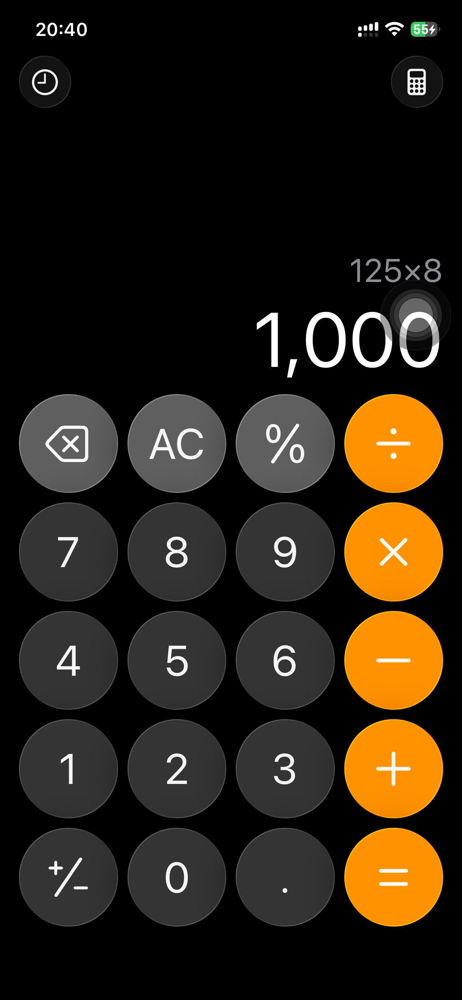

iPhone available · Open source
Your agent.
A real iPhone.
Give Codex and Claude Code eyes and hands on your iPhone. Read the screen, use real apps, and check what happened.
A Swift CLI on your Mac. A persistent XCTest session on your phone. Your agent handles the task.
Explore on GitHubA task. A result you can check.
Calculate 125 × 8, then reconnect and verify the saved result in Calculator history.
- See what’s there.Discover the app. Read its screenshot and accessibility tree.
- Choose the next action.Tap the calculator keys using current references. Keep the screen checks on.
- Check the saved result.Read 1,000 on screen. Reconnect, open History, and confirm the same calculation.

{kind=link}
A recorded CLI task. The first task below checks the client plugin’s Settings workflow.
Small primitives. Real app workflows.
- Observe
- Screenshots, accessibility text, and searchable snapshots.
- observe · inspect
- Act
- Discover and open apps. Tap, scroll, drag, and edit text.
- apps · open · tap · swipe · type · press
- Verify
- Know whether input completed, was rejected, or has an uncertain result. Observe before deciding what comes next.
- completed · not_dispatched · unknown
Today: physical iPhone. Native Mac app automation and continuous screen viewing are planned. This release operates through the CLI.
From install to your first task.
Use your existing Codex or Claude Code account. AgentSoma is MIT licensed.
Bring a Mac, an iPhone, and Xcode.
The release package requires Apple Silicon and macOS 15+. You need full Xcode, a USB-connected iPhone with Developer Mode enabled, and an Apple Development certificate, private key, and matching provisioning profile.
Validated with Xcode 16 and iPhone 12 Pro on iOS 26.6.1 using an existing paid development team. Fresh-Mac and free Personal Team setup remain unverified. Check prerequisites.
-
1. Install the CLI.
In Terminal on your Mac:
brew install HughLee824/tap/agentsoma agentsoma --versionPrefer a download? Follow the manual installation guide. Keep the complete CLI and Runner package.
-
2. Add your client’s plugin.
Codex
Run in Terminal, then start a new Codex task:
codex plugin marketplace add HughLee824/AgentSoma codex plugin add agentsoma@agentsomaRequires a Codex release with
codex pluginsupport. Command names checked on CLI 0.146.0. Invoke$agentsoma:agentsomain the new task.Claude Code
Run in Terminal, then start a new Claude Code session:
claude plugin marketplace add HughLee824/AgentSoma claude plugin install agentsoma@agentsomaInvoke
/agentsoma:agentsomain the new session. Installing the plugin adds device instructions; Xcode and signing are prepared separately.Distributed through this project’s own Git marketplace. Installation and upgrades.
-
3. Prepare your iPhone.
Plug it in, trust the Mac, enable Developer Mode, and keep it unlocked. Copy the device ID returned by
devices:agentsoma devices export IOS_UDID='YOUR_DEVICE_ID' agentsoma setup --device "$IOS_UDID"setupre-signs the bundled Runner locally and checks a device handshake, screenshot, and shutdown. It uses your existing credentials; it does not create Apple certificates or profiles. Signing help. -
4. Give your agent its first task.
Invoke the skill in a new client session, then send:
Open Settings on my iPhone, navigate to General, read the screenshot to verify the page, then disconnect. Do not change any settings.
You’re done when the agent reads the General screenshot, confirms the page, and reports clean disconnection. A successful tap alone isn’t task completion.
Read the full first-task guide
Know the boundaries.
Local device control.
Commands run on your Mac and iPhone. Screenshots and UI text may be sent to your chosen AI client’s model under its data settings.
Explicit execution facts.
Screen checks and fresh references help the agent act on what it saw. When input is uncertain, it observes again before deciding to retry.
Early, with a tested path.
Compatibility is limited to tested environments. The Mac CLI is ad-hoc signed, without Developer ID notarization. Current limitations.
Help when setup stops.
Check CLI availability, Xcode selection, device trust, and provisioning. Troubleshoot your first task or report a reproducible issue.